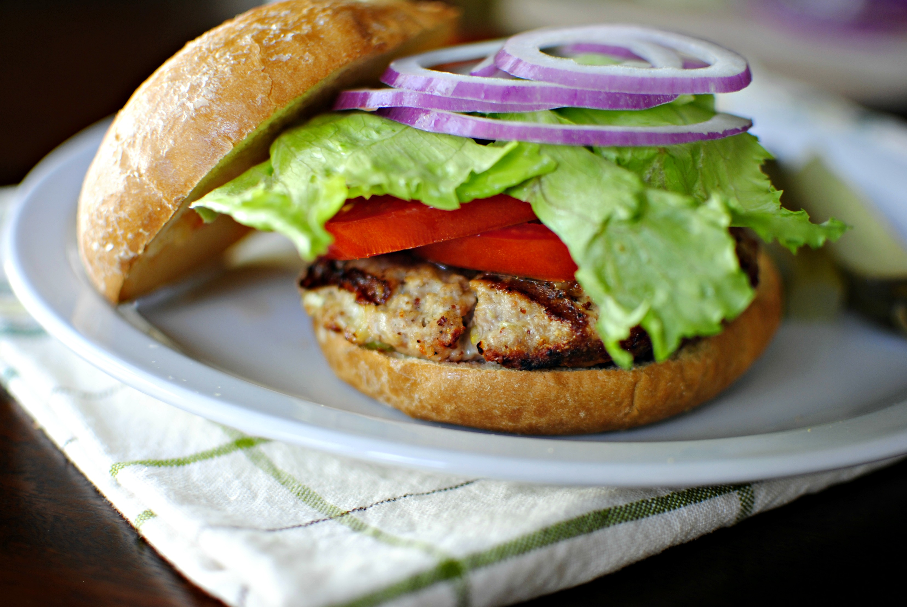

Chef John's Turkey Burger
Home

Recipes Details
This spicy turkey burger recipe uses some of the same techniques and seasonings
from shish kebab to improve an otherwise dull turkey burger.
For something made with meat that's 95% fat free, it's pretty good!
Ingredients
- 1.5 pounds ground turkey
- 1.5 tablespoons plain bread crumbs
- 1.5 tablespoons ground almonds
- 1 teaspoon chili paste
- 2 cloves garlic, crushed and minced
- 1.5 teaspoons finely grated fresh ginger
- 1.5 teaspoons salt
- 1.5 teaspoons garam masala
- 1 tablespoon fresh lemon juice
- 2 tablespoons plain yogurt
- 2 tablespoons chopped fresh cilantro
Steps
- Combine ground turkey, breadcrumbs, almonds, chili paste, garlic, ginger, salt, garam masala, lemon juice,
yogurt, and cilantro. Mix thoroughly with a spatula or clean hands.
- Shape turkey mixture into a ball and divide into 4 even pieces. Refrigerate for 1 hour. Form each piece into
a patty with damp hands. Return patties to refrigerator until grill is hot.
- Preheat the grill to medium heat. Grill turkey burgers until patty appears to be cooked about halfway up the
side and then flip, grilling each side for about 4 to 5 minutes. Burger is done when surface is cracked, and
juices start to rise to the top.